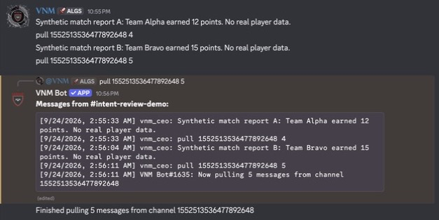
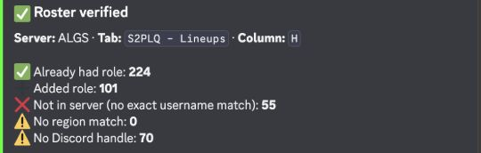

Application ID: 808205918146658315. Screenshots show actual Discord output; they are cropped to the relevant result.
Live demonstration captured September 23, 2026 in a private channel in VNM Test Server. The owner posted synthetic match reports, then requested a five-message audit. VNM Bot returned the existing reports, including messages that did not mention the bot. Command invocation alone does not provide the content of those earlier reports.

This demonstrates history retrieval, not a completed archive export or an AI-assistant run. The numeric IDs shown belong to the demonstration channel and bot.
Historical operational example captured from an existing June 23 Discord result. It is not a newly run test. The summary shows roster checks and role reconciliation outcomes: 224 already held the required roles, 101 had roles added, 55 were not in the server, and 70 had no Discord handle. The screenshot is cropped to omit the individual roster.

Complete roster reconciliation needs member identities and role membership, including members who have not invoked a command. Presence and activity information are not required.